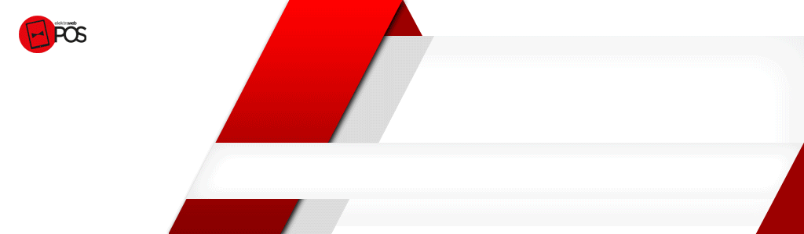

Elektraweb Ön Büro Modülü
Elektraweb Web Tabanlı Otel Programı Ön büro modülü ile rezervasyon, resepsiyon, housekeeping, fatura, folyo, channel manager, online rezervasyon, emniyet kimlik bildirimi gibi işlemleri rahatlıkla gerçekleştirebilir, ayrıntılı yönetim raporlarına tek tuşla ulaşabilirsiniz

Elektraweb POS Restoran Yönetim Programı
En Kapsamlı Restoran Programı SIFIR YATIRIM MALİYETİ İLE…
Restoranınızı işletirken ihtiyaç duyacağınız online sipariş, ÜCRETSİZ dijital menü ve paket sipariş
programı, stok
takibi, muhasebe, satın alma, demirbaş, garson ve masa takibi, rapor – analiz sunumları, adisyon takibi
gibi pek çok
özelliğe tek program üzerinden ulaşabileceksiniz.
Üstelik tamamen bulutta olduğu için sıfır yatırım maliyeti ile… Hemen kayıt yapıp kullanmaya başlar
ve sadece
kullandığınız kadar ödersiniz

ETSWeb Stok ve Maliyet Analizi Programı
işletmenizdeki stok hareketlerini görmenizi, alış ve satışlarınızı planlayabilmenizi, müşterilerinizin tüketim eğilimlerini tahmin etmenizi, personelinizin stokları kullanma şeklini analiz edebilmenizi ve nihayetinde hedefleriniz için öngörüde bulunabilmenizi sağlar.
Elektraweb Otel Muhasebe Yönetimi
Otellerin ihtiyaçlarına göre özelleştirilmiş kapsamlı bir web tabanlı muhasebe yönetim sistemidir. Ön muhasebe ve genel muhasebe dışında işletmenin idari süreçlerinin tamamını yönetebilecek satınalma, demirbaş, personel, stok ve satış yönetimi modüllerine de sahiptir. Tamamen modüler olarak tasarlandığından ihtiyaç doğrultusunda istenilen modüller sonradan da eklenebilir

DİJİTAL DÖNÜŞÜM e-FATURA, e-ARŞİV ve e-DEFTER İLE BAŞLAR
Otelinizin “Dijital Dönüşüm” sürecinizi Elektra ile yönetebilirsiniz.
e-Fatura, e-Defter ve e-Arşiv modülümüz ile finansal operasyonlarınızı yasaya uygun olarak kolaylıkla
gerçekleştirebilirsiniz.
Elektraweb Satın Alma Modülü
Elektraweb Satınalma Yönetimi,
departman talebinden siparişin teslimatına kadar ki tüm operasyonu takip ederek yönetilmesini sağlayan modüldür.

Elektraweb Demirbaş ve Amortisman Yönetimi
Elektraweb Demirbaş Programı
barkotlu el bilgisayarı ile sayım yapabilen, ürünlerin özelliklerine ve yerlerine göre barkod basabilen, garanti ve
servis anlaşmalarını takip edebilen ve muhasebe ile entegre çalışan bir modüldür.

ElektraWeb İnsan Kaynakları Programı
Daha İyi Planlama, Daha İyi Yönetim ve Daha Yüksek Performans..
Elektraweb İK Programı, web tabanlı ve bulut yapıda olduğu için her yerden, her an programa erişebilirsiniz. Dünyanın en
güvenli sunucularında barındırılmaktadır. Bu sayede yüksek hız ve güvenlik sağlar. Yedeklemeler otomatik yapılır.
Üstelik herhangi bir donanıma ve ön kuruluma ihtiyaç duyulmadan, web üzerinden erişim sağlandığından, hemen kullanmaya
başlayabilir ve çok ekonomik fiyatlarla küçük ölçekli şirketlerden binlerce kişilik holdinglere kadar pek çok işletme
tarafından kullanılan Elektraweb Web Tabanlı İnsan Kaynakları Sistemi‘nin avantajlı dünyasından yararlanabilirsiniz.

ELEKTRA Temassız Misafir Uygulaması ile TEMAS YOK, KAZANÇ ÇOK
Sağlıklı Turizm Kriterleri uyarınca Covid-19 önlemlerini uygulayan otellerin iş yükünü azaltan, müşteri memnuniyetini
arttıran ELEKTRA MİSAFİR UYGULAMASI ile restoran veya SPA rezervasyonu, Online check-in, yiyecek/içecek siparişi, oda
temizliği, bell boy talebi gibi 24 farklı işlem için sosyal mesafe korunduğu gibi, sağlanan dijital hizmetlerle oteller
için yeni kazançların kapıları da aralanıyor
Elektraweb Channel Manager
ElektraWeb, yalnızca çevrimiçi kanalları (Booking.com, Expedia, Hotelbeds, HotelsPro vb.) Senkronize etmekle kalmayan,
aynı zamanda oteldeki rezervasyonları alan entegre bir kanal yöneticisine sahiptir. Bu yüzden çok daha kolay ve daha
etkilidir.
ElektraWeb, doluluk bilgileri olan iki yönlü bir bağlantıya sahiptir ve fiyatlar kanallara gönderilir ve rezervasyonlar
alınır.